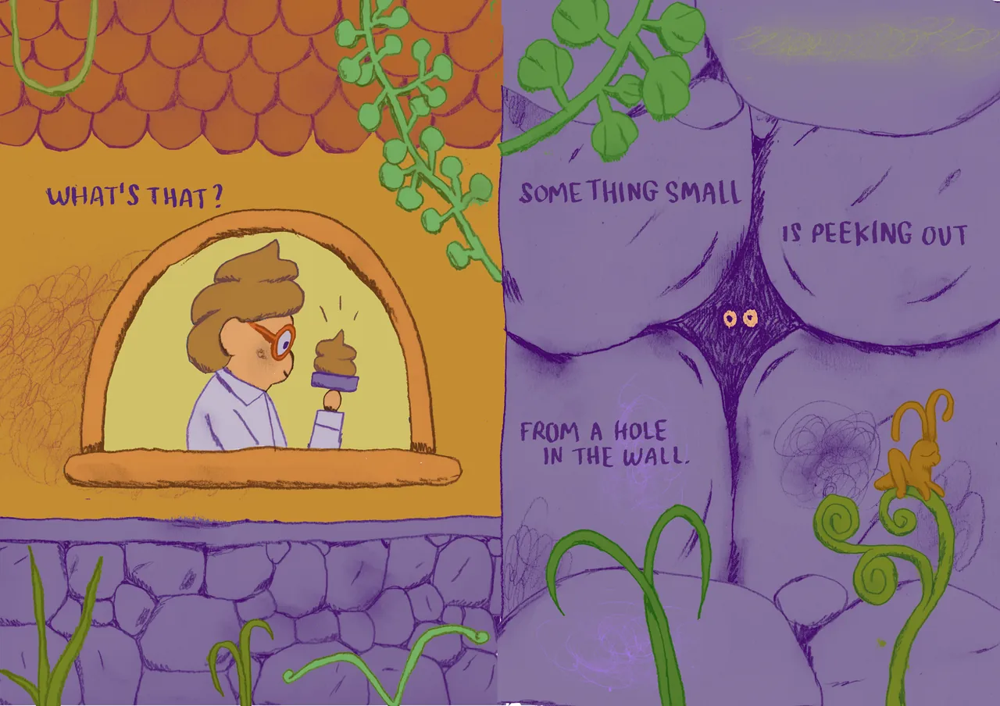
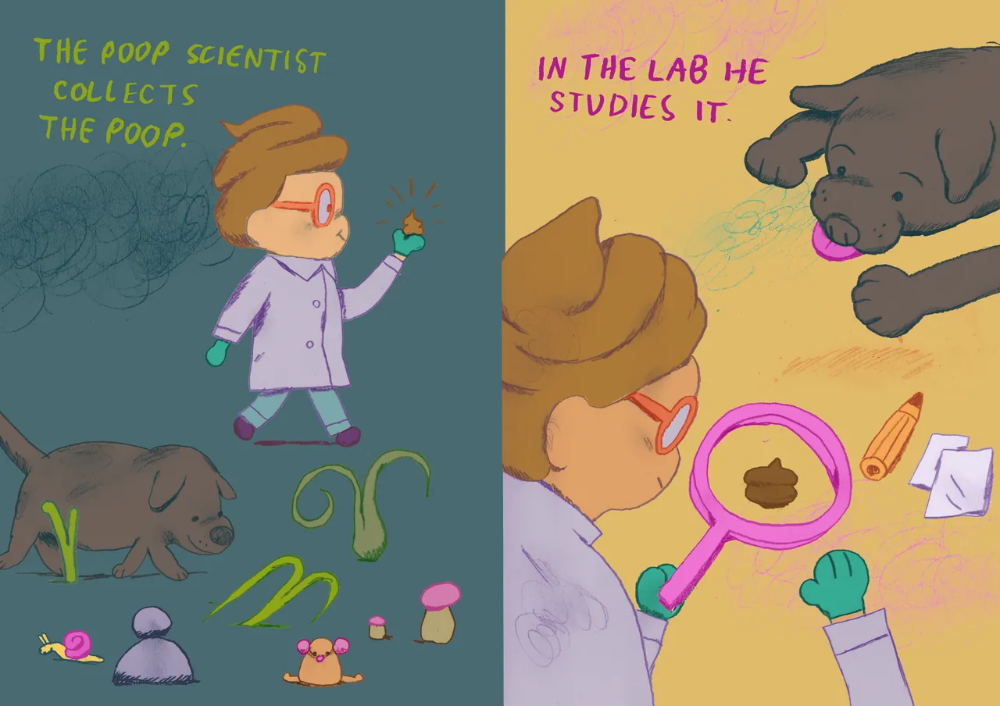
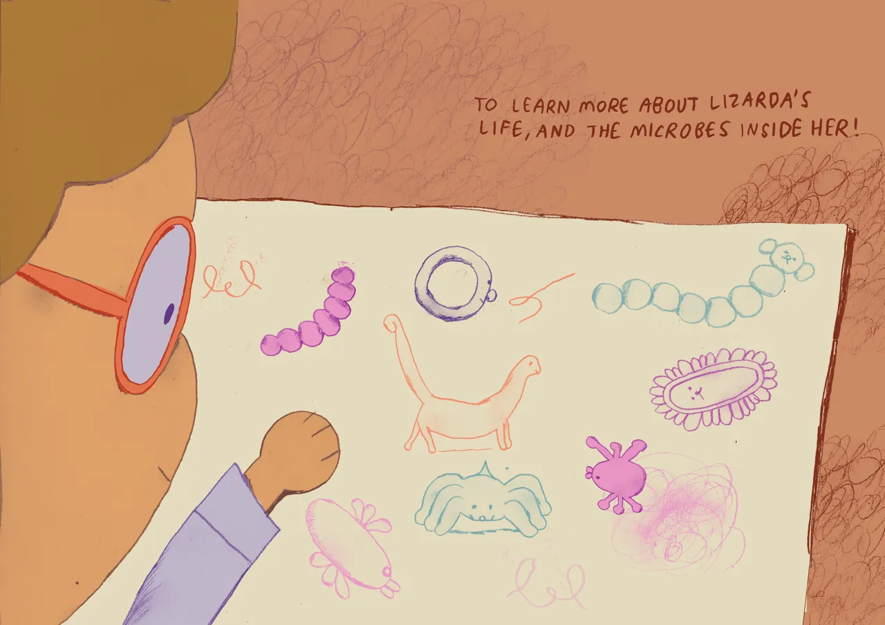
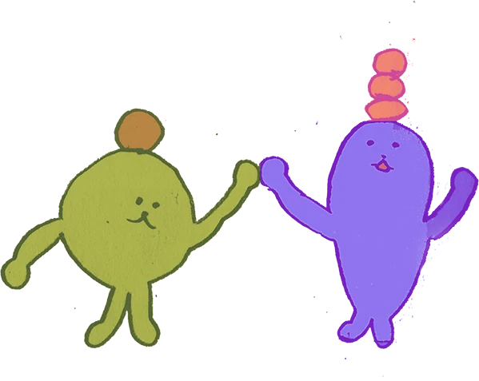

Home
Lizarda and the World Within
1 / 21




The end
Read it again
Open the diary


![Left page: Colourful cartoon microbes float on purple: a green pill-shaped bacterium, a many-armed fungus, a round blue blob and spiky, wiggly shapes. “Welcome to the world within! Here you can find bacteria, fungi and viruses. We call them microbes.” Right page: Two smiling microbes, one green and one purple, high-five; below, a scowling yellow microbe faces a grumpy pink one. “They work together, and sometimes they don’t. But we all have them in our gut, and we need them to be healthy and poop.”](../assets/book/07-1280.webp)